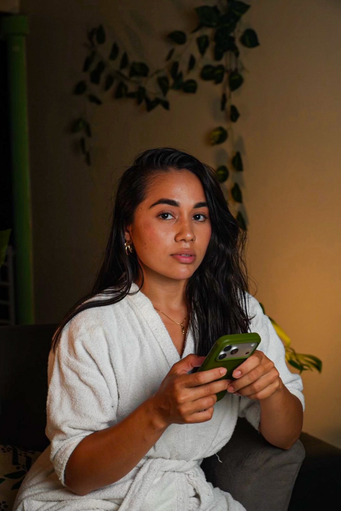
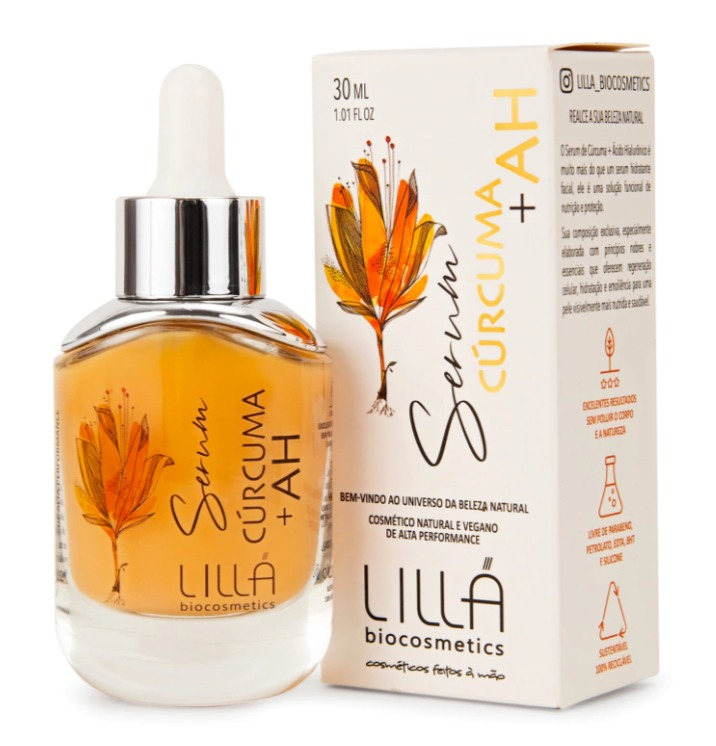
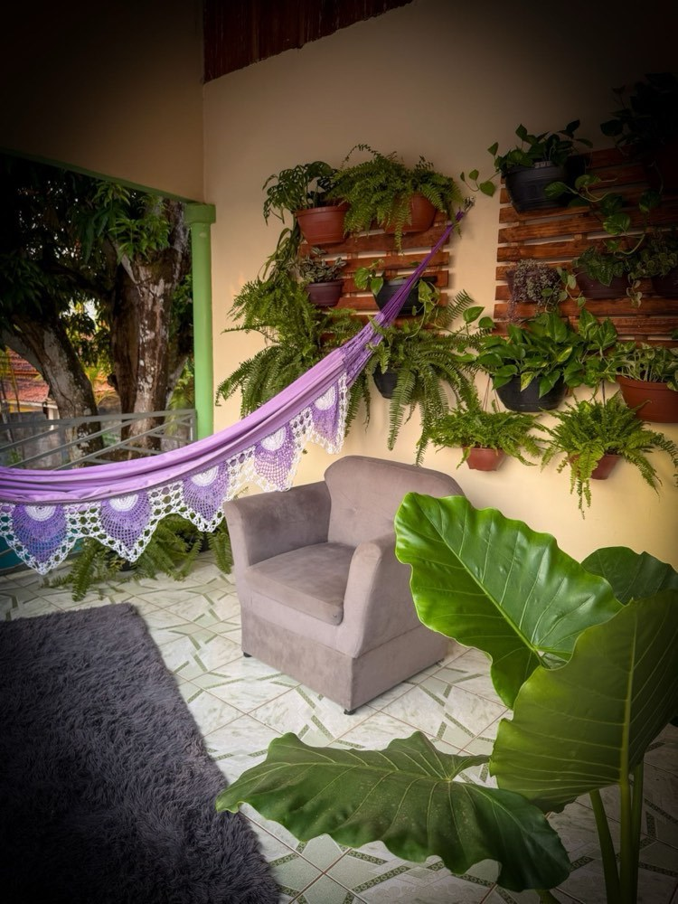
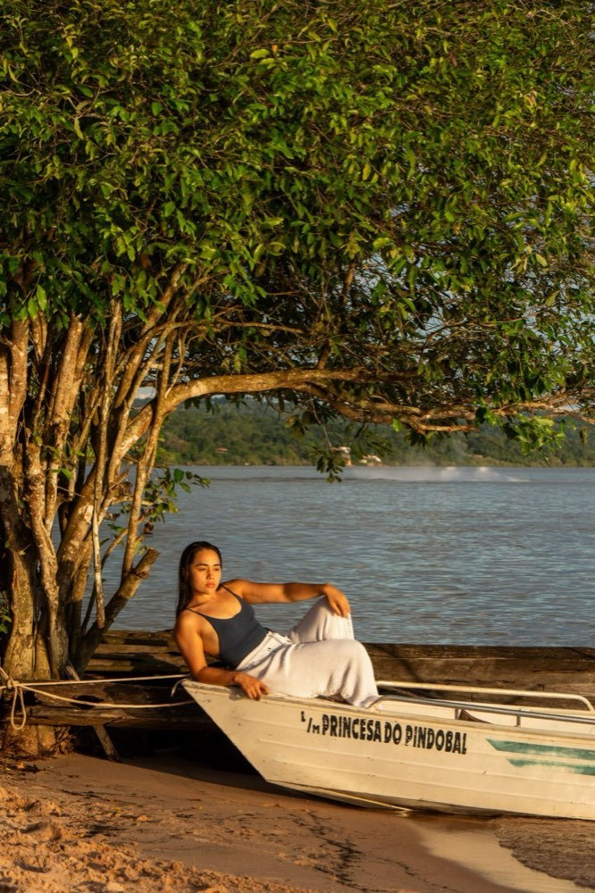

por Juliana Araújo
Ritual solar.
O luxo do
essencial.
Um vídeo em que apresento os dois produtos como um ritual de dois gestos para pele sensível: limpar com delicadeza e devolver a luz. Estética editorial, pele real e a biodiversidade brasileira tratada como o que ela é: ingrediente de luxo.


energia solar
LIMPAR · CALM
Hamamélis, andiroba e copaíba numa limpeza delicada, sem sulfato e sem parabeno.
ILUMINAR · CÚRCUMA + AH
Cúrcuma antioxidante e ácido hialurônico: proteção e hidratação na mesma gota.
Luz dourada
A "energia solar" da cúrcuma vira imagem: a gota âmbar contra o sol abre o vídeo.
Ritmo editorial
Gestos lentos, texturas em macro, câmera lenta e trilha minimalista.
Pele real
Sem filtro de pele. O resultado é viço e hidratação, mostrados com verdade.
Voz amazônida
Andiroba e copaíba contadas por quem é da Amazônia, com propriedade e sem folclore.



Pedra clara, linho off-white, folhagem e cúrcuma fresca. Texto na tela em serifa fina, com o laranja da marca como único acento.
- 1 vídeo vertical 9:16, de 45 a 60 s
- 1 corte de 15 s para anúncio
- Para Reels e TikTok, em collab com @lilla_biocosmetics
- Roteiro aprovado com a marca antes da gravação
Juliana Araújo, criadora de conteúdo, atriz e UGC creator de Altamira, no Xingu (PA). Mais de 70 marcas atendidas, com conteúdo de beleza, skincare e lifestyle que leva o território amazônico para a tela.
Vamos criar esse ritual juntas?
@juh.arauju
ousadiamkt.github.io/ugc/portfolio